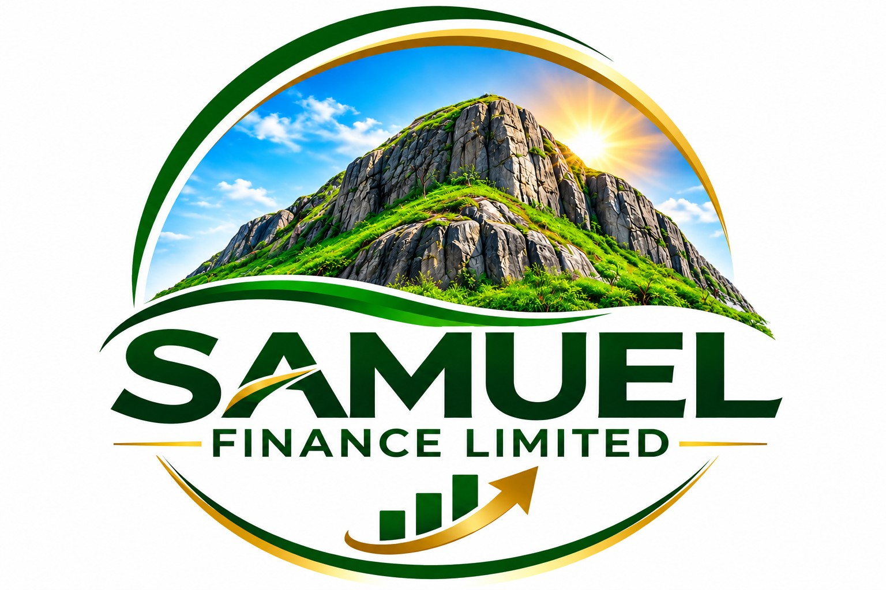

Individual finance
Proposed short-term credit for eligible individuals, supported by verified income and a clear understanding of repayment capacity.
IN DEVELOPMENT
SAMUELFINANCE LIMITEDBuilding a considered approach to finance in Papua New Guinea. Grounded in clear communication, responsible decisions and lasting relationships.
Discover Samuel Finance ↗Financial progress begins with understanding people, earning trust and doing the fundamentals well.
Samuel Finance Limited is a finance-focused enterprise developing a structured short-term lending model for Papua New Guinea. Our company’s identity draws on the strength of the mountain and the promise of living greenery: resilience, steady progress and growth.
Our intended approach brings together understandable terms, careful assessment and reliable records, with respect for the people behind every enquiry.
Explore our foundations ↗Developing a lending model around understanding,
affordability and accountability.
Proposed short-term credit for eligible individuals, supported by verified income and a clear understanding of repayment capacity.
IN DEVELOPMENTExploring working capital support for small businesses, with a separate assessment of business needs, documentation and suitability.
UNDER EXPLORATIONPlanning clear explanations of agreements, repayment schedules, receipts and balances, with accessible channels for questions and concerns.
OUR INTENDED STANDARDi These services are proposed. Products, eligibility, rates and fees are not finalised and remain subject to required approvals. This website is not a public offer of credit.
Our ambition is to become a recognised Papua New Guinean finance business valued for transparent decisions, responsible service and disciplined operations.
Our proposed operating framework puts customer understanding and careful oversight at the centre of every decision.
Speak with our team ↗Our intended standard is to explain the amount advanced, complete borrowing costs, repayment dates and responsibilities in writing before any agreement.
The proposed assessment considers verified income, essential living costs and existing commitments. Approval would depend on documented eligibility and affordability checks.
Our planned service framework provides for clear records, respectful communication, hardship review and an accessible complaints process. Contact the team by phone, WhatsApp or email to raise a concern.
The proposed controls separate approval, payment and reconciliation, with management review and protection of personal information. Formal adoption of policies and required registrations remains to be confirmed.
A shared focus on trust, sound records
and disciplined operations.
The proposed governance model places strategy, policy oversight and material risk decisions with the Managing Director.
Finance records and accounting support.
Systems and technology support.
Samuel Finance Limited is developing its operating model. Company registration details, regulatory status and product approvals have not been confirmed in the supplied corporate profile. No regulatory licence, approved lending rate or product availability is represented on this website.
For company information, business enquiries
or questions about our proposed approach.